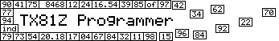
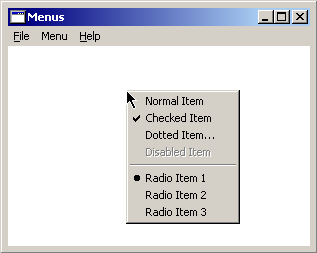

Menus
In the software world, a list of commands that the user can select from is
called a "menu". In Windows (and most other GUI systems), a "menu" is a small
pop up window that displays a list of commands. The most common are displayed
from the menu bar at the top of most windows in Windows:

Another common way of displaying a menu is by right-clicking on something to
make a menu appear at the mouse pointer.

This is called a context menu and the commands on the menu are usually closely
related to the thing you clicked on. You can't always bring up a context menu
in this way - it depends on the program - but it's very common in Windows
programs. For example, in the shell (the program that displays the desktop,
taskbar, start menu, icons, folder windows, etc.) you can basically right-click
on anything and get a context menu. It's a very standard way of performing
actions on specific items.
Types Of Menu Items
The different types of menu items are displayed in the picture. Programmers
can create their own types, but these are the standard Windows types.
- Normal items execute a command of some sort, whether it does something
with a disk file or brings up a new window or changes the behavior of
some aspect of the program or whatever.
- Checked items are options that you can select directly in the menu.
When you select a checked item, it becomes unchecked. Selecting it again
will check it again, just like a check box. Checked menu items usually
modify the behavior of the program in some way.
- Dotted items are just normal items that bring up a dialog box so you can
specify how you want the command to run. For example, "Save As..."
prompts you for a file name so the program saves the file under the right
name.
- Disabled items cannot be selected. These are dependent on some other
option in the program or some condition that hasn't been met.
- Radio items are rarely used, but they are standard Windows menu items.
They are like radio buttons in that they form a group and when you check
one of them the others in the group become unchecked. They are used for
mutually exclusive options, but this type of thing is usually done with
a dialog box for options or preferences.
About The TX81Z Programmer Menus
Speaking of options dialog boxes, you'll notice that the only one I have is
the MIDI Setup dialog box. All the other options in the program are accessible
directly in the menus. I did this for convenience. There aren't many options,
and I figured they would be easier to find if they were in the menu.
One item that I use in the program that I didn't mention are the bold items
in some of my menus. These are something I wrote myself. They don't do
anything, they are just headers to display the organization of the program
options.